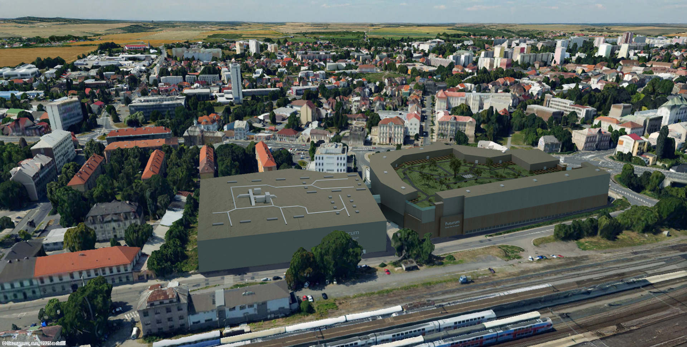
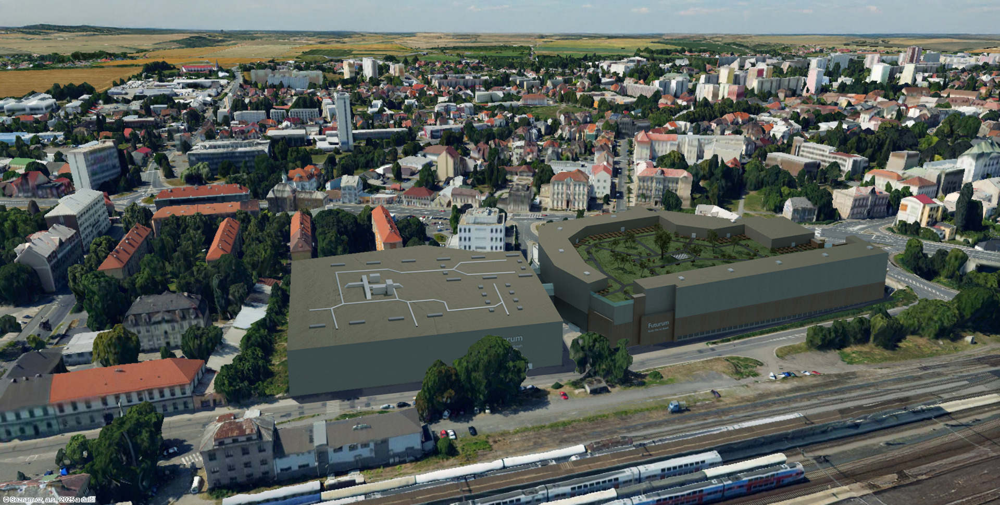
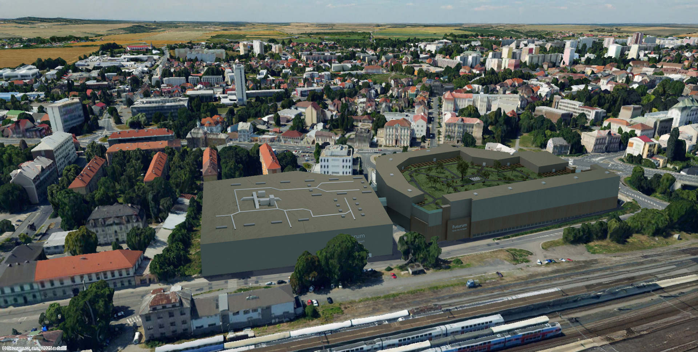

Futurum II
Futurum II je symbolem modernizace a pokroku v Kolíně. Tento ambiciózní projekt propojuje inovativní design s funkčností, čímž vytváří dynamické a atraktivní prostředí pro obchodní i volnočasové aktivity. S rozlohou 15 000 m2 nových komerčních ploch poskytuje dostatek místa pro obchody, kanceláře a gastronomická zařízení.
Projekt zahrnuje také velkorysé relaxační zóny a zelené plochy, které přispějí k pohodlnějšímu a zdravějšímu prostředí. Klíčovým prvkem je parkovací zázemí pro 500 vozidel, což zajišťuje komfortní přístup pro návštěvníky i zaměstnance.
Futurum II je navrženo s ohledem na budoucí potřeby Kolína a jeho obyvatel, a proto využívá nejnovějších technologií a udržitelných materiálů. Tento projekt není jen rozšířením obchodního centra – je to krok směrem k modernější, živější a ekologičtější budoucnosti města.
Před a Po

Plán podlaží